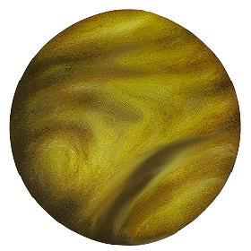
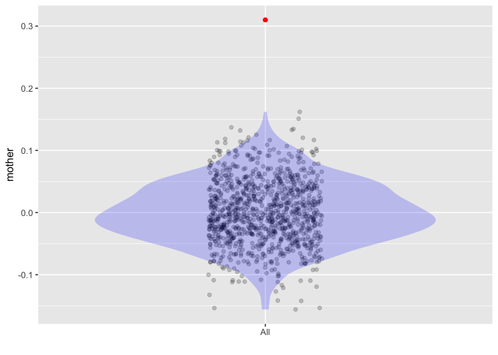

lm(height ~ sex, data=Galton) %>% conf_interval()| term | .lwr | .upr |
|---|---|---|
| (Intercept) | 64.0 | 64.0 |
| sexM | 4.8 | 5.4 |
\[\newcommand{\Ptest}{\mathbb{P}} \newcommand{\Ntest}{\mathbb{N}} \newcommand{\given}{\ |\!\!|\ }\]
In Lesson 35, we looked at the accounting process that is used for building a classifier and interpreting the results. That accounting process is also applicable, in whole or part, to a more general procedure in statistics called, variously, “hypothesis testing” or “Null hypothesis testing” (NHT), or “Null hypothesis significance testing” (NHST). Textbooks tend to use the shorter name: “hypothesis testing.” But these Lessons will use NHT as the name, because that is a more complete description of the actual process.
The word “test” is familiar to all who have ever been students, but it will still be useful to have a definition. This one seems reasonable:
“A procedure intended to establish the quality, performance, or reliability of something, especially before it is taken into widespread use.” – Oxford Languages
Based on this general definition, one would expect that “hypothesis test” will be “a procedure intended to establish the correctness or applicability of a hypothesis, especially before relying on that hypothesis to guide action in the world.” Regrettably, this definition does not align well with the statistical procedure called NHT. This lack of alignment causes confusion and error. It has also led to controversy about the use of the procedure.
The educator’s response to the controversy is often, and reasonably, “We need to teach NHT, whatever its flaws, because that is the procedure that everyone follows.” Educational reformer George Cobb followed up with a question: Why does everyone use it? His answer: “Because it’s the centerpiece of the introductory statistics curriculum.”
In this Lesson, we will introduce the logic of Null hypothesis testing (NHT) and compare it to other procedures that also have a claim to be the way to test hypotheses. In Lesson 37, we will show how to do the computations involved to create the number—called the p-value—that is usually taken as the end-result of NHT. And in Lesson 38, we will return to the controversy, with the goal of helping the reader avoid pitfalls in interpretation of the p-value.
In Lessons 34 and 35, the classifiers we built had two possible outputs, \({\mathbb{P}}\) or \({\mathbb{N}}\). The classifier is only part of a bigger procedure which we called a “test.” To avoid unnecessary abstraction, our examples featured medical tests.
In a medical test, the first step in the procedure usually involves a measurement procedure for an individual, for instance, counting white blood cells or measuring the concentration of prostate-specific antigen (PSA).
The second step is purely arithmetical, comparing the measurement result to a threshold, thereby determining if the output should be \({\mathbb{P}}\) or \({\mathbb{N}}\). Lessons 34 and 35 were largely about how to set a good value for the threshold and involved stating a loss function and considering the prevalence of the condition involved.
A more familiar kind of test is the one taken by students in school, for instance, an algebra test. As the reader knows, in an algebra test, the subject is made to answer questions, the number of correct answers counted, and that count applied to a threshold to determine whether the overall result is “pass” or “fail.” There is not an explicit underlying condition, say, “expert” or “dilettante.” Consequently, there is no such thing as a false-negative (an expert who fails the test) or a false-positive (a dilettante who passes the test). All that matters is the test result itself
Unlike medical tests, academic tests are generally not the product of the sort of careful development phase described in Lesson 35. In an algebra test, there is no training data, that is, no sample of subjects who have been observed definitively to be “experts” or “dilettantes” and who take the test to be classified as “pass” or “fail.” There is no calculation of a sensitivity or specificity to characterize the test and no use of a loss function to bend sensitivity, specificity, and prevalence into a threshold dividing “pass” from “fail.” Academicians never tell their students what the false positive and false negative rates are.
Students and teachers think of an academic test as that part of the overall procedure where questions are asked and answered. Of course, there is a follow-up procedure that we call “grading,” where the correct answers are counted and the count converted to a pass/fail result. Sometimes the threshold between pass and fail is not fixed, but is set by the instructor to achieve a desired pass rate. This is called “grading on a curve,” the threshold depends on the observed counts.
NHT is like “grading on a curve.” The data collection and summary of the data is not part of the procedure. Like “grading on a curve”, NHT starts at the point where the data have already been recorded and summarized. (Typically, the summary is the coefficient from a regression model or some other statistical measure like R2.)
NHT is only about grading the summary, which is done on a curve. The grading is accomplished by examining a likelihood calculated from the summary. As notation for this likelihood, we will write \({\cal L}_{\mathbb{S}}(\text{Null hypothesis})\).
The phrase “Null hypothesis” is too long to make for pleasant mathematical reading. Consequently, a shorter symbol, H_0_, is often used. The subscript 0 is a shorthand for “null.” The “H” indicates a hypothesis.
The key to understanding Null hypothesis testing is to know what the Null hypothesis is claiming.
In a technical sense, it would suffice to say that the Null hypothesis is a claim that the effect size is zero (or that R2 is zero) except for sampling variation. Making sense of this requires that one know what an “effect size” (or “R2”) is and what “sampling variation” means. At this point in these Lessons, you ought to know all of these things. But how to talk about hypothesis testing to a general audience?
One strategy is to describe the Null as the “absence of any effect” or “relationship.” Another common strategy is to avoid mentioning the Null at all and use alternates such as “the result is significant” or “not due to chance.”
Another way to think about the Null hypothesis is algorithmically. A Null-hypothesis relationship—really, a lack of relationship—can be created between two variables by shuffling one of them. Shuffling was introduced briefly in Lesson 29, where it was used to simulate an explanatory variable unrelated to the response.
To illustrate, consider the Galton data about the heights of adult children and their parents. We will make a simple model of height as a function of sex—everyday experience suggests a relationship between the two variables.
lm(height ~ sex, data=Galton) %>% conf_interval()| term | .lwr | .upr |
|---|---|---|
| (Intercept) | 64.0 | 64.0 |
| sexM | 4.8 | 5.4 |
If the Null hypothesis were true, that is, if sex were unrelated to height, the sexM coefficient ought to be close to zero and a confidence interval on the coefficient will usually include zero. But for height ~ sex the confidence interval does not include zero.
Now consider what happens if we shuffle one or both of the variables.
lm(height ~ shuffle(sex), data=Galton) %>% conf_interval()| term | .lwr | .upr |
|---|---|---|
| (Intercept) | 66.00 | 67.00 |
| shuffle(sex)M | -0.35 | 0.59 |
lm(shuffle(height) ~ sex, data=Galton) %>% conf_interval()| term | .lwr | .upr |
|---|---|---|
| (Intercept) | 66.00 | 67.00 |
| sexM | -0.47 | 0.47 |
lm(shuffle(height) ~ shuffle(sex), data=Galton) %>% conf_interval()| term | .lwr | .upr |
|---|---|---|
| (Intercept) | 67.00 | 67.00 |
| shuffle(sex)M | -0.75 | 0.19 |
All these confidence intervals include zero, as expected.

In terms of the planet metaphor for hypotheses, the Null hypothesis \({\ |\!\!|\ } H_0)\) is a planet. Variables on this planet are always unrelated to one another. The possible indication of a pattern is due to sampling variation, not a genuine relationship.
Riddle: How do we get to Planet Null?
Take the space shuffle.Before the advent of ubiquitous computing, the Null hypothesis was implemented using algebra and probability theory. An example of such theory appeared in Lesson 29. The blue diagonal line in Figure 29.3 reflects what the average value of R2 would be if a large number of trials were run on the model y ~ x1 + x2 + ... + xk where the x’s are unrelated to the y. Another part of the theory has to do with the “distribution” of the F statistic from Lesson 29, which we will discuss in Lesson 37.
In Null hypothesis testing, there is only the one hypothesis—the Null—under consideration. Since the world \({\ |\!\!|\ } H_0)\) can be created by shuffling, the computations for NHT can be done pretty easily even without the probability theory just mentioned.
There has been a controversy since the 1930s about whether hypothesis testing—in the broad sense—should involve two (or more) competing hypotheses. One of these could be the Null hypothesis, the other, which we call the “Alternative hypothesis” (\(H_a\)) a statement of a specific non-null relationship.

The situation with two hypotheses would be very similar to that presented in Lessons 34 and 35. In those lessons, the two hypotheses were C and H. In developing a classifier, one starts by collecting a training sample which is a mixture of cases of C and H. But, in general, with a competition of hypothesis—\(H_0\) and \(H_a\)—we don’t have any real-world objects to sample that are known to be examples of the two hypotheses. Instead, we have to create them computationally. Instances of \(H_0\) can be made by data shuffling. But instances of \(H_a\) need to be generated by some other mechanism, perhaps one akin to the DAGs we have used in these lessons.
With mechanisms to generate data from both the Null and Alternative hypotheses, we would take the statistical summary \(\mathbb{S}\) of the actual data, and compute the likelihoods for each hypothesis: \({\cal L}_{\mathbb{S}}(H_0)\) and \({\cal L}_{\mathbb{S}}(H_a)\). It should not be too controversial in a practical process to set the prior probability for each hypothesis at the same value: \(p(H_0) = p(H_a) = {\small \frac{1}{2}}\). Then, turn the crank of Bayes’ Rule (Section 35.4) to compute the posterior probabilities. If the posterior of one or the other hypothesis is much greater than \({\small \frac{1}{2}}\), we would have compelling evidence in favor of that hypothesis.1
There are specialized methods of Bayesian statistics and whole courses on the topic. An excellent online course is Statistical Rethinking.
Before the widespread acceptance of the Bayesian approach, statisticians Jerzy Neyman and Egon Pearson proposed a two-hypothesis framework in 1933. We will discuss this in ?sec-power.
If you have studied statistics before, you likely have been exposed to NHT. Many textbook descriptions of NHT appear to make use of an “alternative hypothesis” within NHT. This style is traditional and so common in textbooks that it seems disrepectful to state plainly that it is wrong. There is only one hypothesis being tested in NHT: the Null.
In the textbook presentation of NHT, the “alternative” hypothesis is not a specific claim—for instance, “the drug reduces blood pressure by 10 mmHg”. Instead, the student is given a pointless choice of three versions of the alternative. These are usually written \(H_a \neq H_0\) or as \(H_a < H_0\) or as \(H_a > H_0\), and amount to saying “the effect size is non-zero,” “the effect size is negative,” or “the effect size is positive.”
Outside of textbooks, only \(H_a \neq H_0\) is properly used. The other two textbook choices provide, at best, variations on exam questions. At worst, they are a way to put a thumb on the scale to disadvantage the Null.
Using the shuffling algorithm, the computation underlying NHT is very much like the technique introduced in Lesson 23: create a set of trials to represent the sampling distribution. The twist in NHT is that the sampling distribution is calculated on Planet Null. Or, in conventional statistical language, what’s computed is the “sampling distribution under the Null.”
The phrase “under the Null” is often described as being shorthand for “assuming the Null to be true.” When doing a calculation, “assuming the Null to be true” might be better expressed more emphatically: “arranging things so that the Null is true” or “enforcing the Null.”
We will use the Galton data, and the model height ~ mother, to illustrate computing the “sampling distribution under the Null.” The relationship being expressed by height ~ mother is that the adult child’s height is related at least in part to the mother’s height. As always, the effect size is a good way to quantify that relationship. Here it is:
mod <- lm(height ~ mother, data=Galton)
mod %>% coef()(Intercept) mother
46.6907659 0.3131795 mod %>% conf_interval()| term | .lwr | .upr |
|---|---|---|
| (Intercept) | 40.2951224 | 53.0864094 |
| mother | 0.2134437 | 0.4129153 |
These reports says that changing the model input by one inch will translate to about 0.3 inches in the output. The uncertainly due to sampling variation broadens the 0.3 into an interval, 0.2 to 0.4 inches of height per inch of mother.
Now we rocket off to Planet Null. On Planet Null, children are not related to their mothers. Or, put another way, the unique relationship between a mother and her child is a Planet-Earth concept. On Planet Null, each mothers and children are paired at random.
To calculate the mother coefficient on Planet Null, use shuffle(). Here’s the result from one sample:
lm(height ~ shuffle(mother), data=Galton) %>% coef_summary()| term | coefficient |
|---|---|
| (Intercept) | 67.1960085 |
| shuffle(mother) | -0.0067929 |
Repeating the above generates another sample from Planet Null:
lm(height ~ shuffle(mother), data=Galton) %>% coef_summary()| term | coefficient |
|---|---|
| (Intercept) | 62.7905224 |
| shuffle(mother) | 0.0619522 |
From these two Planet Null samples, it is already evident that the shuffle(mother) coefficient on Planet Null tends to be closer to zero than the mother coefficient from Planet Earth.
We can make a more compelling and precise statement if we look at a large number of Planet-Null samples:
Trials <- do(1000) * {
lm(height ~ shuffle(mother), data=Galton) %>% coef()
}Trials %>%
ggplot(aes(y = mother, x = "All")) +
geom_jitter(alpha = 0.2, width=.15) +
geom_violin(alpha = .2, fill = "blue", color = NA) +
geom_point(aes(y = 0.31, x = 1), color="red") +
xlab("")
shuffle(mother) coefficient. Each gray dot is the result from one shuffling trial. The violin shows the sampling distribution under the null. The red dot is the mother coefficient found without shuffling.The set of mother coefficients in these trials reflects us the “sampling distribution under the Null.” (Figure 36.3) The “sampling distribution under the Null” is represented by the gray dots. The violin gives an easier to read representation. For this model, the mother coefficient from the sample from Planet Earth is so far different that it cannot pretend to be an instance from Planet Null.
In the same spirit, we might simply look at the likelihood ratio, \({\cal L}_{\mathbb{S}}(H_a) \div {\cal L}_{\mathbb{S}}(H_0)\) and draw a confident conclusion only when the ratio turns out to be much greater than 1, say, 5 or 10.↩︎